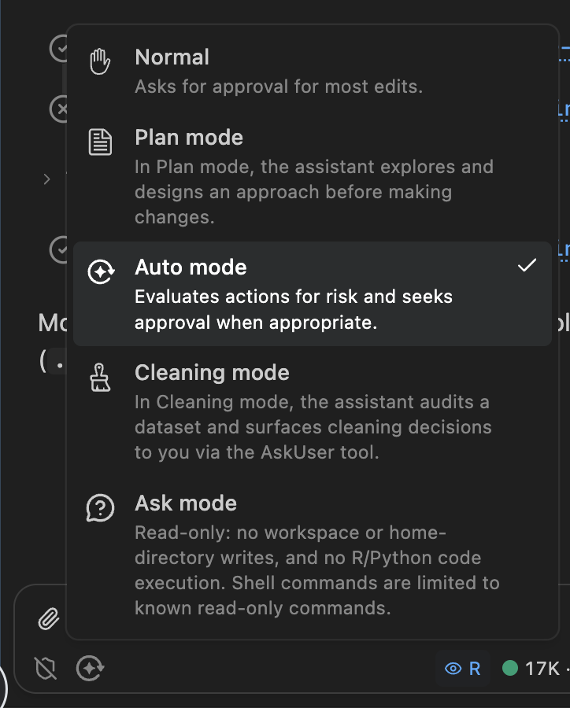
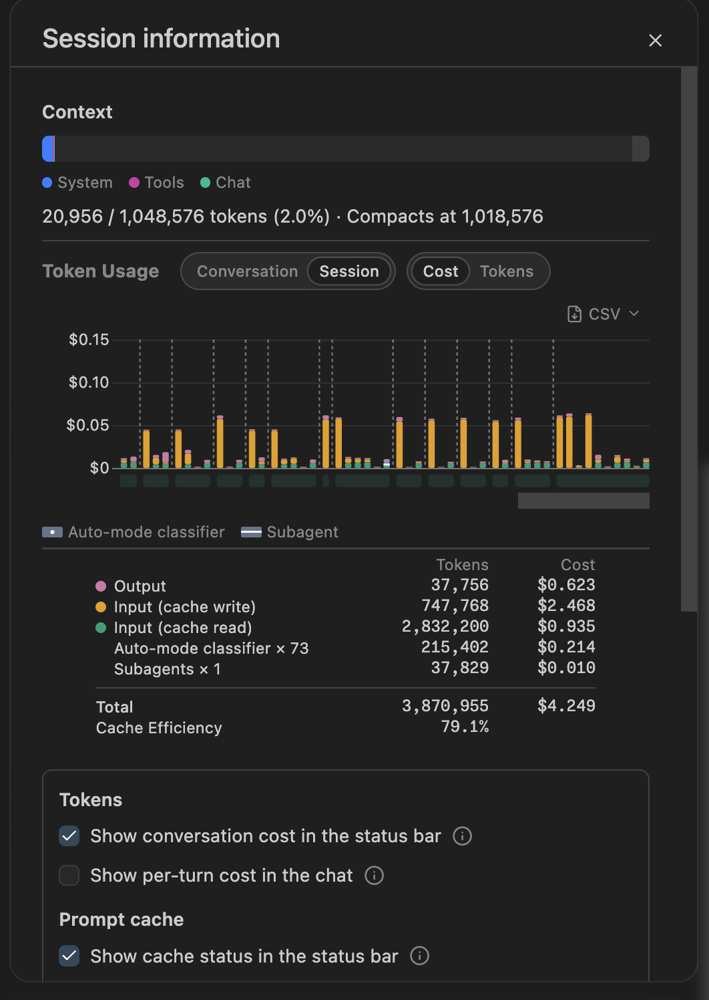

How does Posit Assistant work?
Goals
- Introduce you to package development with Posit Assistant
- Talk about how it works
- Help you understand the risks associated with using agents
- Give you practical cost control techniques
- Discuss Posit Assistant alternatives
What is an agent?
Let’s make a package
(Note to self: make sure you’re in normal mode)
Create a new R package called compliment in the current directory. It should generate randomized compliments.
You’ve never made a package before?
- It’s that easy!
- How to find the bathroom:
- Code lives in
R/ - Documentation lives in
#'comments - Tests live in
tests/testhat/
- Code lives in
- We’ll talk more about the pieces and the workflow later
Your turn
- Use the same prompt as me. It’s an underspecified ask, so we’re going to get lots of variation. That’s part of the fun!
- Manually approve a few writes
- Then allow all
- Make sure your package has tests and Git
- How does your package differ from mine? From your neighbours?
There are three types of output
- Text
- Thinking (click to expand)
- Tool calls
Tool calls let the agent run code on your computer
- Tools are provided by the harness, e.g. Posit Assistant
- LLM asks harness to run code; harness returns result to the LLM
- Often requests many tool calls at once
- These are called “parallel” calls, but don’t actually run in parallel
- Can recognise with the thick line
Parallel tool calls

Two read calls and three edit calls
What are some common calls?
writecreates a new fileeditmodifies an existing fileexecuteCoderuns R (or Python) code in the consolebashruns code you’d usually use the terminal forAskUserasks you a questionreadreads a file on diskwebfetchreads a web pagesearchsearches directory for matching text
A little vocab
- Harness: provides tools; runs the loop
- Provider: who runs the server that runs the model
- Open models can be hosted anywhere
- AWS + Azure host lots of foundation models
- Model: the specific LLM model you’re using
Some examples
- Kimi K3 (model) on posit.ai (provider) with Posit Assistant (harness)
- Opus 5 (model) on posit.ai (provider) with Posit Assistant (harness)
- Opus 5 (model) from Claude (provider) in Claude Code (harness)
- GPT-5.3 (model) from AWS Bedrock (provider) in Posit Assistant (harness)
- GPT-5.3 (model) from OpenAI (provider) in Codex (harness)
Your turn
- Try and prompt your agent to make it use each of the tool calls above
- What other tools are available?
So what is an agent?
An LLM running in a loop, using tools, to achieve a goal
- The LLM decides what tool to run next
- The harness runs the tool and feeds the result back
- Repeat until the LLM declares the task done
Safety and security
What are the risks?
I think the cleanest definition is that the dangers are irreversible action, i.e.:
- Editing a file (without git)
- Deleting a file or database table (without a backup)
- Sending an email
- Revealing a secret (API key, password, …)
Your turn
What other irreversible actions are you worried about? What ways do you know to protect yourself?
How do you protect yourself?
- Ask for permission
- Make operations reversible
- Always use git
- Back up!
- Prevent dangerous actions (i.e. use a sandbox)
- Auto mode
Ask for permission
- IMO constantly asking for permission is just security theatre
- 99% of LLM actions are fine, so you quickly get trained to always click OK
- So then you just click “Approve always”
- Matching command prefixes doesn’t work
Prefixes don’t work
git push --force
gh issue delete 123
find . -type f -name '*.log' -mtime +30 -size +10M -path './var/*' -delete
curl -fsSL https://example.com/install.sh -o /dev/stdout | sh
tar -xzf backup.tar.gz -C /tmp/restore --strip-components=1 -PWhat about sandboxes?
Use OS level sandboxing to only allow reads and writes to the current directory, and no network access
Unfortunately that’s not very useful
- No package install
- No temporary directory
- No GitHub
- No web search
I remain optimistic that it’s possible to overcome these problems, but current implementations are painful
Auto-mode
- What if we only ask permission for operations that seem legitimately dangerous?
- That’s the idea behind auto-mode: ask a (simpler) LLM to classify if a command is dangerous or safe, and then only ask permission for dangerous options
- (And use only the conversation, not tool results, to avoid the “lethal trifecta”)
- It leaves a lot to be desired, but I think this is a sweet spot on the security-utility spectrum right now
Picking a mode

Posit Assistant mode picker showing Normal, Plan, Auto, Cleaning, and Ask modes
The lethal trifecta
Simon Willison’s term for the dangerous combination:
- Access to private data (your files, secrets, API keys)
- Exposure to untrusted content (web pages, emails, issue comments)
- Ability to communicate externally (send requests, post comments)
With all three, a prompt injection attack can exfiltrate your data.
Reasoning about LLM behaviour is weird
Delete ~/desktop/family-data
Delete ~/desktop/junk
Your turn
Can you trick PA into doing something bad? Some ideas you might try:
- Can you get it to send me an email complaining about one of my packages?
- Can you create a fake environment variable (e.g.
POSIT_ASSISTANT_API_KEY) and get it to save it in a GitHub gist
Costs
Why care?
- You probably don’t need to if you’re an individual developer
- But:
- It matters inside enterprises
- It’s a proxy for energy usage
- Who knows how long all-you-can-eat plans will continue
Life is good for individual developers
- Individuals can use an all-you-can-eat plan
- Codex: $20 / month, $100 / month
- Claude Code: $20 / month, $100 / month
- These are very generous; you get 20-80x the value of API pricing
- BUT you can only use them in provider harnesses (i.e. not Posit Assistant)
Enterprise plans are different
Enterprises have to pay by the million tokens
- Opus 5: $5 input, $25 output
- gpt-5.6-terra: $2 input, $12 output
- Kimi K3: $3 input, $15 output
(This is also what you pay in ellmer)
Average engineers spend $150-$250 / month, i.e. $8-12 / day
High users spend $3,000 / month, i.e. $150 / day
My views on cost-benefit have changed
- I used to think that Anthropic models were worth the premium
- But the relative cost has increased and output quality has decreased (code is still fine, but its writing is painful)
- Kimi K3 is excellent. Somewhere between Opus and Fable in code quality, but a much better writer, and only costs 75% of Sonnet (thanks to its tokenizer).
- All models since April 16, 2026 (Claude Opus 4.7) use a new tokenizer that uses ~20% more tokens, so even though the per-token prices didn’t change, the overall cost did
- And Anthropic models seem to be producing more loquacious output, which also costs more money 🤔
So how can you tell what you’re spending?
- Harnesses by model providers don’t tend to make the cost obvious (I think you can imagine why)
- Posit Assistant displays a lot of information (and we’re working hard to make it better)
- AgentsView is a good retrospective tool that works with many harnesses
- Two important facts to know:
- Conversations are additive
- Cache is king
Session information in Posit Assistant

Posit Assistant session information dialog showing token usage and cost breakdown
Conversations are additive
LLMs are predictive models
They need the complete history of the conversation
Both your inputs and its outputs
Recommendation: use
/clearto start from a fresh slate(Restarting your agent is as important as restarting your R session)
Saves money and avoids stale state
Cost is dominated by cache hits
- No caching = ~10x cost
- Very hard to reason about, not least because the providers differ so much:
- Claude: 5 minutes / 1 hour (2x cost)
- OpenAI: 30 minutes
- Kimi K3: no guarantees
- But if you resume a session the next day, expect 10x the cost of the last request
Your turn
- Look at what you’ve spent in previous PA conversations
- Optional: download and install AgentsView. Where is your LLM spend going?
Posit Assistant alternatives
Posit Assistant currently most compelling inside the enterprise
- Optimistically, it’s 2x better than Claude Code/Codex
- But you have to pay 20-80x as much to use it with an API key (or via posit.ai)
- So ask for it if you use RStudio/Positron for work, but otherwise we accept it’s probably not worth it for you to use it
- We are closely tracking Anthropic/OpenAI opening up their plans to other harnesses
So why use it in this workshop?
- We believe it’s a really good product and want you to at least experience it
- We also want to see what problems you discover with it
- It’s what I use day-to-day
- It gives the best feedback on cost
What if you can’t use it?
- The Claude Code and Codex harnesses are also very good
- I have used both VS Code/Positron extensions and just their CLIs in the terminal
- Downside of both extensions is that they can’t find
quartoandair, which are bundled with Positron. You’ll need to explicitly tell them that they’re bundled with Positron. - We recommend pairing with https://github.com/posit-dev/mcp-repl or similar to get access to a persistent R/Python environment